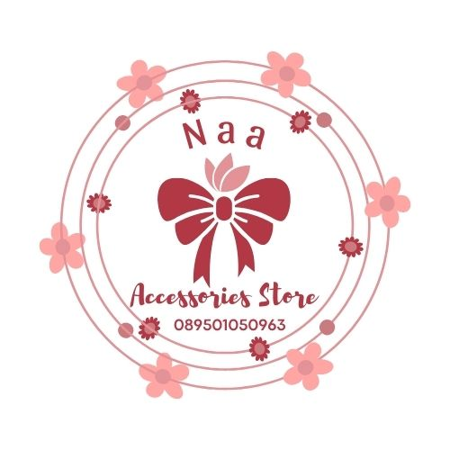

Tentang Naa Aksessoris
Cerita Kami
Aksessoris adalah berbagai benda tambahan yang dipakai untuk melengkapi, mempercantik, atau mendukung penampilan seseorang atau suatu produk. Dalam konteks mode, aksesori mencakup perhiasan seperti gelang, kalung, anting, dan cincin.
